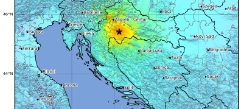
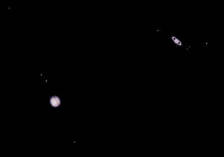

DID YOU
KNOW
?

 TALK
MAIN PAGE
Search Wikipedia
TALK
MAIN PAGE
Search Wikipedia
 Arts
Geography
History
Mathemathics
Science
Society
Technology
All portals
Biography
a ranking of
the greatest
double-entendre
songs of all time included
"Big Long Slidin' Thing" by Dinah Washington (pictured), "Need a
Little Sugar in My Bowl"
by Bessie Smith
, "It Ain't the Meat (It's the Motion)" by the Swallows, "Keep
On
Churnin'
(Till the Butter Comes)" by
Wynonie
Harris, and "Big Ten Inch Record" by Aerosmith?
Arts
Geography
History
Mathemathics
Science
Society
Technology
All portals
Biography
a ranking of
the greatest
double-entendre
songs of all time included
"Big Long Slidin' Thing" by Dinah Washington (pictured), "Need a
Little Sugar in My Bowl"
by Bessie Smith
, "It Ain't the Meat (It's the Motion)" by the Swallows, "Keep
On
Churnin'
(Till the Butter Comes)" by
Wynonie
Harris, and "Big Ten Inch Record" by Aerosmith?
An attack at Aden International Airport An earthquake strikes Petrinja,Croatia In the news The COVID-19 pandemic, also known as the coronavirus pandemic, is an ongoing pandemic of coronavirus disease 2019 (COVID-19) caused by severe acute respiratory syndrome coronavirus 2 (SARS-CoV-2). It was first identified in December 2019 in Wuhan, China. The World Health Organization declared the outbreak a Public Health Emergency of International Concern in January 2020 and a pandemic in March 2020. As of 1 January 2021, more than 83.4 million cases have been confirmed, with more than 1.81 million deaths attributed to COVID-19.
 The EU-UK Trade and Cooperation Agreement (TCA) is a trade agreement signed on 3 December 2020, between the European Union (EU)...

EU-UK Trade and Cooperation Agreement Ar approximately 12:20 PM CET (11:20 UTC) on 29 December 2020, an earthquake of magnitude 6.4 Mv 6.2 ML, hit the Sisak Moslavina County...
On 30 December 2020, a plane carrying members of the newly formed Yemeni government landed at Aden International Airport
The closest great conjunction conjunction is a conjunction of the planets Jupiter and Saturn, when the two planets appear closest together in the sky..

..... that after
Illinois
overhauled its Freedom of Information
Act on January 1, 2010
, the law became regarded as one of the most liberal
public-records statutes in the United States?
... that Manner,
a Macau
entertainment company, opened a store that
sells almond biscuits with condom-looking wrapping
, and gives customers free beef jerky if the show a parking
ticket?
that in 1982, a Magnificat in German composed in 1707 for soprano , traverso, strings, and continuo and attributed to Bach and Telemann, was identified as a composition by Melchior Hoffmann ?
... that XO was one of the lowest-selling games in the Super Robot Wars series due to Xbox 360's unwelcoming commercial and critical reception in Japan?
.... that Spanish physicist Teresa Rodrigo worked on the discovery of the Higgs boson at CERN and the discovery of the top quark at Fermilab?
that Frances Spatz Leighton was called the "Queen of Female Ghosts" for ghostwriting many memoirs?
that in 1982, a Magnificat in German composed in 1707 for soprano , traverso, strings, and continuo and attributed to Bach and Telemann, was identified as a composition by Melchior Hoffmann ?
... that XO was one of the lowest-selling games in the Super Robot Wars series due to Xbox 360's unwelcoming commercial and critical reception in Japan?
.... that Spanish physicist Teresa Rodrigo worked on the discovery of the Higgs boson at CERN and the discovery of the top quark at Fermilab?
that Frances Spatz Leighton was called the "Queen of Female Ghosts" for ghostwriting many memoirs?